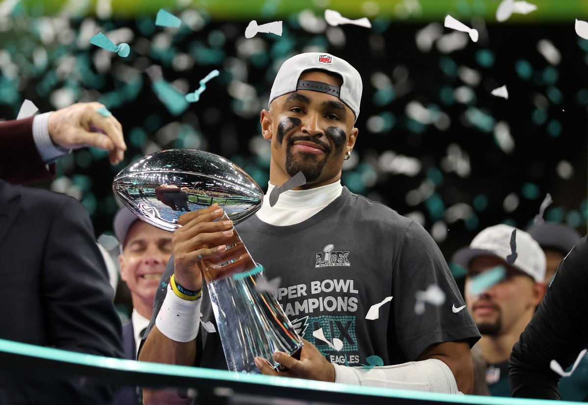
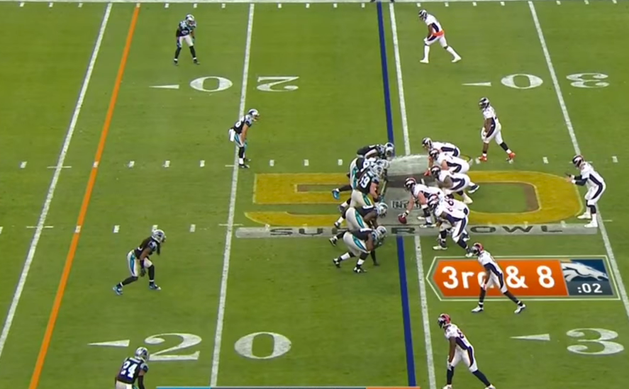

What is the max number of players per team on the field at any given time?
Eleven
If a team has more than this they draw a "too many men on the field" penalty worth 5 yards
Which team won the super bowl in the 2024-2025 season?
The Philadelphia Eagles
Which player has the most super bowl wins in their career
Tom Brady won 7 super bowl rings during his 23 seasons in the NFL
He won 6 super bowls with the New England Patriots and 1 more with the Tampa Bay Buccaneers

How many yards does a team need to gain to receive a first down?
The offense must gain 10 yards in order to receive a first down
The line which they must cross, often called the "line to gain", is typically marked on television broadcasts with a yellow line
What plays might a team on offense run on 4th down that they otherwise wouldn't?
If a team is backed into their own territory, they typically will punt on 4th down. IE intentionally giving up control of the ball by kicking it down the field. If a team is reasonably close to the opponent's endzone, they might attempt a field goal. Kicking the ball between the other team's uprights to score 3 points.